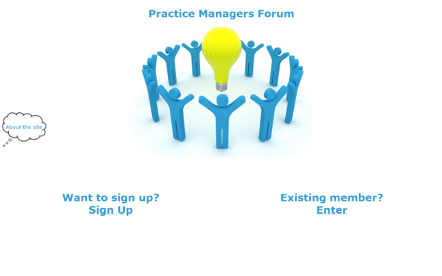
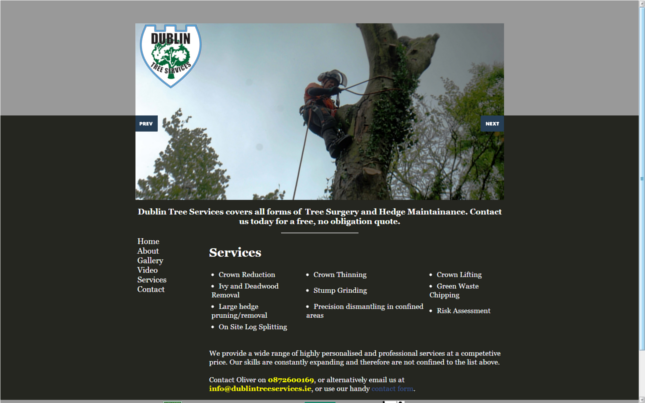
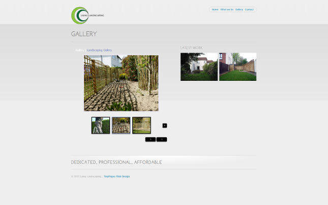

What We've Done - Our Portfolio:
Charlottedoolin.com is a modelling portfolio site we built in early 2013. We wanted to keep the site simple, clean and with a focus on the imagery. We are currently working on the SEO and optimisation of this site, in the hope of getting Charlotte's image out there to a vast audience. We would like to wish Charlotte and family all the luck in the world on her budding career!

The Practice Manager's Forum is a site built for the managers of medical practices in Ireland. The site is built to be used as a simple and easy to use forum so that medical practices can share up to the minute information on the newest and best techniques and practices to ensure a great service to their doctors and patients.

Dublin Tree Services is one of our most successful sites in terms of traffic/clients generated. Our client wanted to advertise his business as much as possible, but in a targeted and affordable manner. To do this we decided to create social media marketing campaigns using facebook/twitter and also to run an intelligently targeted Google Ad's campaign. In the first month of the site being live the client tripled the total money they had invested in the website, showing how a great web presence can really boost your exposure.

Laing Landscaping is a client who came to us wanting more. David wanted us not only to develop a site for him, but also to recommend great marketing strategies. We decided to build up Dave's social media sites, embed social functionality in the web page and work on his portfolio. Additionally we recommended that David create a campaign utilising an online deal site. In 48 hours had sold 400 vouchers for his service online, a feat that kept him hard at work for a year to come!